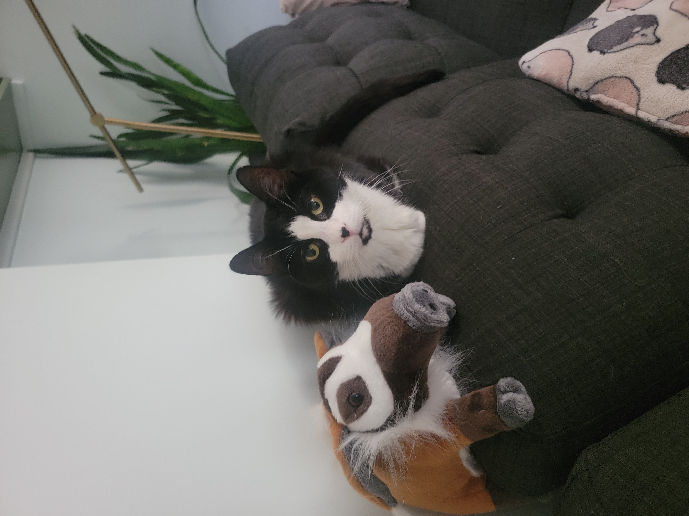
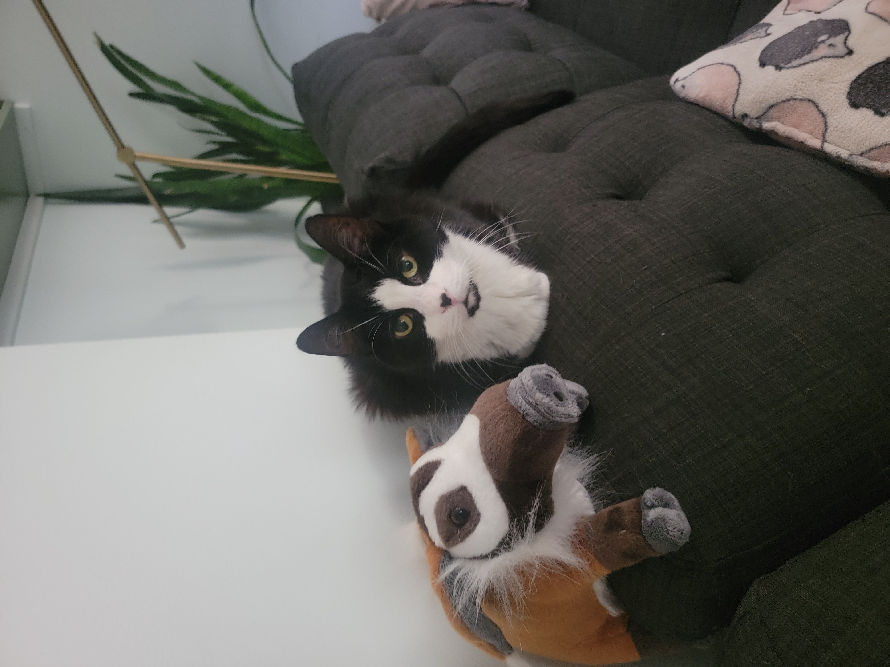

Paige Leon lives in Providence RI with their partner Fern and three (3) cats: Boris, Shavah, and Udon. Her mom is from Nebraska and her dad is from Peru, and she has two brothers and a sister.
In her free time she enjoys spending time in nature, cooking, and playing video and/or board games.
She has been programming in some capacity since she got a copy of Click and Play (a game design program from the 90s) from an older kid in the neighborhood and got the game design bug. Since then they have worked with JAVA, HTML/CSS, Python, Scheme, MatLab, and probably others they can't remember right now.
The only animal products she eats are pasture raised eggs from small scale farms, a dietary restriction she has named veggan. She loves trying food from different cultures around the world. Some of their favorites include Peruvian, Japanese, Ethiopian, and Persian

 


![A nonbinary person crouching in a tunnel. The grafitti behind them reads 'vivan las lesbiana' [translation: long live lesbians]](images/fern.jpg)